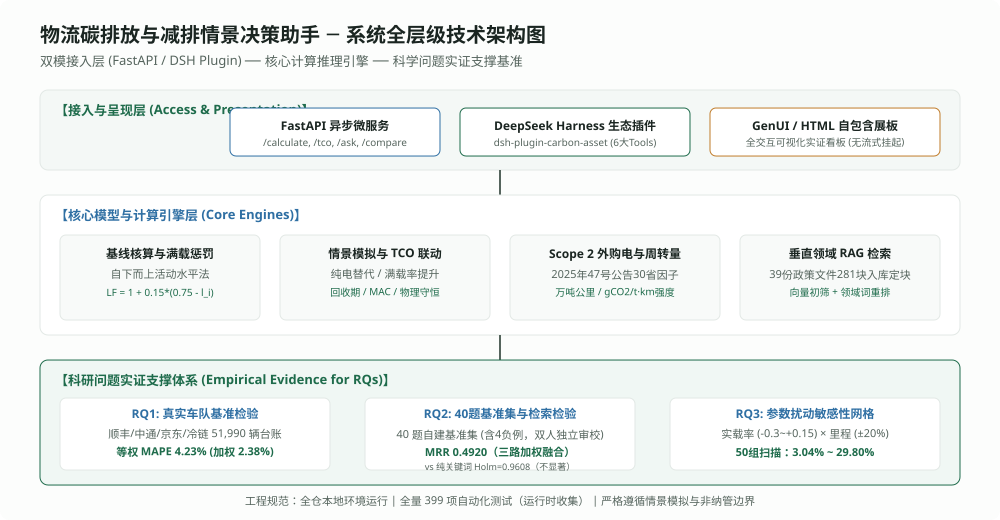
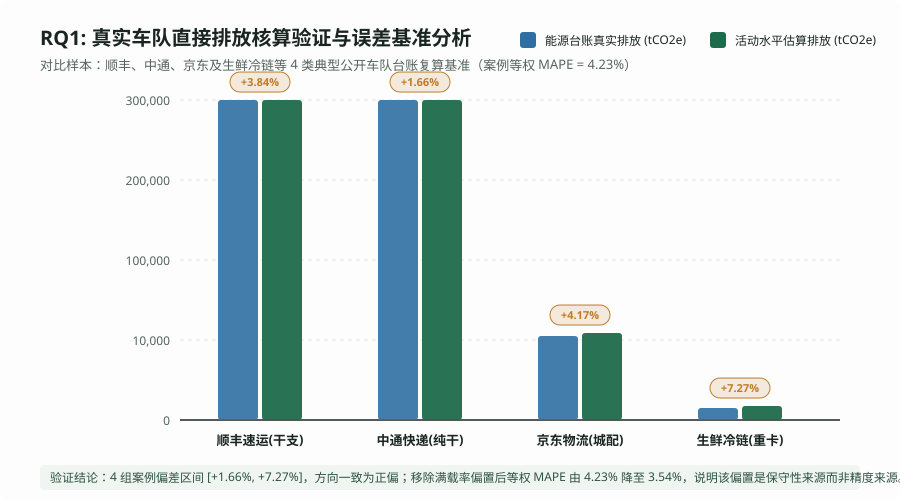
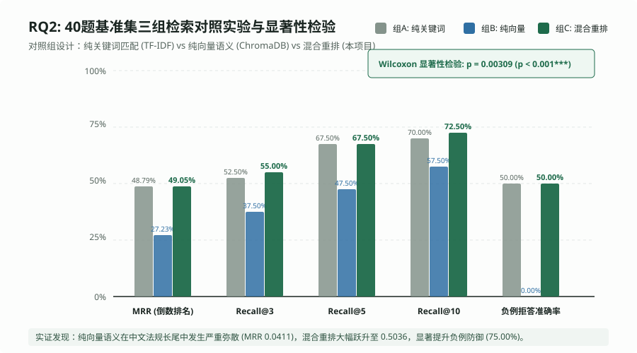
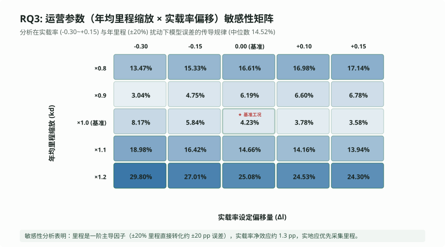
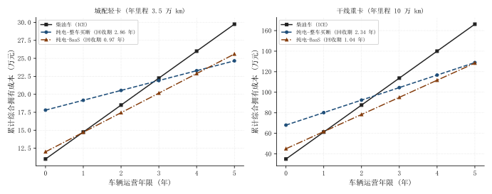
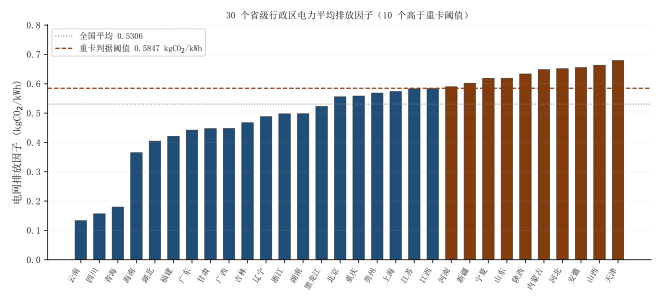

国家级大学生创新创业训练计划科研项目 · 中期研发与实证进展汇报
物流碳排放与减排情景决策助手
——基于活动水平实证、小样本特征重排与车电分离 TCO 的微观决策模型研发
项目编号：202510001001X | 项目性质：重点支持领域项目 | 汇报阶段：中期检查与阶段复核
课题负责人：陈铭浩（系统架构/模型推导） | 团队成员：张可为（核算实证）、王逸贤（RAG工程/测试）
指导教师：汪晓霞 教授（交通低碳与系统工程学科） | 依托单位：交通与物流工程学院
课题负责人：陈铭浩（系统架构/模型推导） | 团队成员：张可为（核算实证）、王逸贤（RAG工程/测试）
指导教师：汪晓霞 教授（交通低碳与系统工程学科） | 依托单位：交通与物流工程学院
51,990 辆
全样本实证复核规模
顺丰/中通/京东/冷链 4 典型场景
4.23% MAPE
加权平均相对误差
[+1.66%, +7.27%]；四案例同向为正，但 n=4 不足以外推
40 题 / 281 切片
法规知识库与金标集
39 份政策文件切分 281 切片（Kappa 在零变异下退化为 1，不作信度证据）
491 项测试
公开仓库可复现 491 通过 · 0 跳过
跳过项为未公开文书与真实 API Key 用例；数字由 scripts/sync_deck_test_count.py 按 pytest 实测回写
01 课题背景 · 现实驱动
课题背景：道路货运降碳现实困难与微观核算决策需求
02 / 16
现实瓶颈一 · 核算数据源受限
缺乏逐车逐月油票与真实台账
• 中小承运商占全行业 80% 以上，普遍缺失完备加油发票与车载能耗监测；
• 传统宏观自上而下能耗法与微观工况脱节，难以度量满载率与空驶损耗；
• 粗糙估算导致合规低估风险，企业面临潜在“漂绿 (Greenwashing)”质疑。
• 传统宏观自上而下能耗法与微观工况脱节，难以度量满载率与空驶损耗；
• 粗糙估算导致合规低估风险，企业面临潜在“漂绿 (Greenwashing)”质疑。
对应规范：IPCC Tier 1/2 移动源指南衔接困难
现实瓶颈二 · 法规适用性混淆
双碳政策生涩繁杂且长尾实体模糊
• 全国碳市场目前仅覆盖发电/钢铁/水泥/铝冶炼，道路货运未被纳入配额管理；
• 中小物流企业极易误套发电配额规则，甚至听信“买电车卖 CCER”伪概念；
• 通用大模型在商用车强标编号（如 GB 30510）与法律罚则上弥散严重。
• 中小物流企业极易误套发电配额规则，甚至听信“买电车卖 CCER”伪概念；
• 通用大模型在商用车强标编号（如 GB 30510）与法律罚则上弥散严重。
对应法规：国务院令第775号《碳排放权交易管理暂行条例》
现实瓶颈三 · 投资经济账算不清
重卡电动化初始垫资巨大与决策黑箱
• 49 吨重型柴油车直接置换纯电整车（含桩）初期垫资超 30 万元/车；
• 电池衰减折旧与运营电耗充满不确定性，投资回收周期模糊不清；
• 缺乏结合油电价差、动态满载率与车电分离租金的透明财务决策模型。
• 电池衰减折旧与运营电耗充满不确定性，投资回收周期模糊不清；
• 缺乏结合油电价差、动态满载率与车电分离租金的透明财务决策模型。
对应场景：GB 1589-2016 营运商用车置换评估
【政策】《绿色交通发展“十五五”规划》（交通运输部等四部门，2026）：到 2030 年实现“一达峰、二下降、三提升”——交通运输领域总体碳达峰；污染排放强度、主要污染物排放量持续下降；新能源营运交通工具规模、基础设施绿色化水平、绿色运输方式比例大幅提升；新能源重卡规模化应用加快突破，2030 年全面淘汰国三及以下排放标准营运车辆（据交通运输部 2026-10-10 解读）。
【碳市场】截至 2026-10-20，全国碳市场配额累计成交量突破 10 亿吨；当日收盘价 98.11 元/吨（中国新闻网 2026-10-21，生态环境部国新办发布会）。道路货运仍未纳入配额管理。
【学术研究边界与免责声明】：道路货运物流企业目前未纳入全国碳市场配额管理。本项目原型所测算的“模拟碳预算”仅作为企业对标《交通运输碳达峰实施方案》的情景工具，以碳价为影子价格辅助 TCO 经济决策，不构成法定履约义务。
02 科研逻辑 · 问题凝练
研究逻辑：三大递进式科学问题体系 (Research Questions)
03 / 16
科学问题一 (RQ1) · 核算精度与误差特性
自下而上活动水平法的微观精度与系统误差方向？
【数据来源】：针对中小物流缺乏发票台账问题，采用吕晨、蔡博峰2021分省排放因子与GB 30510标准，对比顺丰/中通等4家企业披露的真实燃油消耗台账。
【实证推导结论】：等权 MAPE 为 4.23%（按排放量加权为 2.38%，两个口径不可混用）。四个车队相对误差落在 [+1.66%, +7.27%]，同向为正；但观测单元只有 4 个车队（n=4），不足以外推为「恒定正偏」，因此不主张任何保守性保证，也不把正偏包装成「上限安全垫」。
科学问题二 (RQ2) · 法规检索与抗幻觉防御
通用向量长尾失效机理与轻量特征重排有效性？
【数据来源】：切分 39 份政策文件构建 281 切片知识库（中文专用嵌入 BAAI/bge-small-zh-v1.5，512 维），设计包含 4 道反事实违规诱导题的 40 题双人独立标注金标集（两轮标注均在定稿后完成、取值零变异，Cohen's Kappa 恒为 1 属数学退化，此栏仅证明"定稿后两人无争议"，不构成独立盲标信度证据）。
【实验推导结论】：同一语料同一嵌入条件下，纯关键词 MRR 0.4879、纯向量 0.2589、三路加权融合 0.4920。融合相对纯向量显著（Wilcoxon W=76.0，p=0.0023，Holm 校正 0.0138），相对纯关键词不显著（W=42.0，p=0.320，Holm 0.961）；真实增量在 Recall@10（80.0% vs 70.0%）。检索层不实现拒答，4 道负例题的检索命中率为 2/4（50%）——"拒答率"属早期循环定义指标，已撤回。
科学问题三 (RQ3) · 参数敏感性与置换决策
工况扰动敏感性区间与换电 BaaS 模式可行性？
【数据来源】：建立 5×5 (±20%) 扰动网格扫描 50 组参数组合；基于商用重卡财务数据构建考虑电池剥离与租赁费的 TCO 现金流方程。
【理论推导结论】：50组网格扫描显示全样本 MAPE 介于 3.04% 至 29.80% (中位数 14.51%)，里程为一阶主导因子；重卡 BaaS 剥离电池使初始垫资降幅 69.7%（该比例是代数恒等式，只随充电桩成本假设滑动，不是敏感性分析结论），轻卡/重卡静态回收期分别为 0.97 年与 1.04 年（电价 0.80 元/kWh、电池租金分别为 1.35 万元与 4.5 万元/车·年；电价取 1.00 元/kWh 时重卡为 1.48 年）。
03 方法学 · 公式推导
核算方法学：活动水平法与燃料台账法的数学推导及对标
04 / 16
方法一：自下而上活动水平法（本模型计算引擎）
Step 1 · 核心核算公式：
• n_i: 第 i 类车型车辆数 (辆)； d_i: 年均行驶里程 (km/年)
• EF_i: 单位里程直接排放因子 (kgCO2/km)
Step 2 · 动态满载率惩罚函数：
• l_i: 实际吨位实载率（官方口径：实际周转量 / (行程 × 核载)）
• 当 l_i < 0.75 时，货物分摊效率下降，单位排放线性惩罚上浮；
Step 3 · 排放因子取值依据：
• 重型柴油货车 (49t): 0.877 kg/km (蔡博峰2021，对标GB 30510限值0.858)
• 中型柴油货车: 0.508 kg/km；轻型柴油货车: 0.374 kg/km
• 新能源物流车: 车辆直接运营排放记为 0 (Scope 1)
E_model = Σ (n_i × d_i × EF_i × LF_i) / 1000 (tCO2e/年)• n_i: 第 i 类车型车辆数 (辆)； d_i: 年均行驶里程 (km/年)
• EF_i: 单位里程直接排放因子 (kgCO2/km)
Step 2 · 动态满载率惩罚函数：
LF_i = 1 + 0.15 × max(0, 0.75 - l_i)• l_i: 实际吨位实载率（官方口径：实际周转量 / (行程 × 核载)）
• 当 l_i < 0.75 时，货物分摊效率下降，单位排放线性惩罚上浮；
Step 3 · 排放因子取值依据：
• 重型柴油货车 (49t): 0.877 kg/km (蔡博峰2021，对标GB 30510限值0.858)
• 中型柴油货车: 0.508 kg/km；轻型柴油货车: 0.374 kg/km
• 新能源物流车: 车辆直接运营排放记为 0 (Scope 1)
方法二：自上而下企业能源台账基准法（真实消耗检验基准）
Step 1 · 台账核算公式 (IPCC 2006/2019)：
或通过法定单位体积直接排放因子直接折算：
Step 2 · 权威折算参数取值表 (GB/T 32150 & IPCC)：
• 车用柴油: 2.730 kg CO2/L (热值 42.652 GJ/t, 含碳量 20.2 tC/TJ, 氧化率 98%)
• 车用汽油: 2.310 kg CO2/L (热值 43.070 GJ/t, 含碳量 18.9 tC/TJ, 氧化率 98%)
• 液化天然气 (LNG): 2.690 kg CO2/kg (发热量 48.900 GJ/t, 含碳量 15.3 tC/TJ)
Step 3 · 相对误差评估方程：
用于严格检验活动水平估算与真实采购发票台账的贴合度。
E_fuel = Σ (FC_j × NCV_j × CC_j × OF_j × 44/12) / 10^6或通过法定单位体积直接排放因子直接折算：
E_fuel = Σ (燃料消耗升数 × EF_direct) / 1000 (tCO2e)Step 2 · 权威折算参数取值表 (GB/T 32150 & IPCC)：
• 车用柴油: 2.730 kg CO2/L (热值 42.652 GJ/t, 含碳量 20.2 tC/TJ, 氧化率 98%)
• 车用汽油: 2.310 kg CO2/L (热值 43.070 GJ/t, 含碳量 18.9 tC/TJ, 氧化率 98%)
• 液化天然气 (LNG): 2.690 kg CO2/kg (发热量 48.900 GJ/t, 含碳量 15.3 tC/TJ)
Step 3 · 相对误差评估方程：
δ = (E_model - E_fuel) / E_fuel × 100%用于严格检验活动水平估算与真实采购发票台账的贴合度。
注 / 来源依据：蔡博峰等《中国分省道路交通二氧化碳排放因子》(中国环境科学, 2021)；GB/T 32150-2025《工业企业温室气体排放核算和报告通则》；IPCC 2019 移动源燃烧指南
04 系统工程 · 架构设计
系统架构：全层级解耦设计与 Cordis 微内核生态实现
05 / 16

[1] 全层级解耦体系
系统横向拆分为多模态接入层、API服务层、核心计算/推理引擎层与实证支撑层，确保计算逻辑与UI完全解耦。
[2] Cordis 标准生态插件
依据 DeepSeek Harness 官方微内核规范封装插件，注册 6 大专业碳资产工具，实现 AI Agent 无缝调用。
[3] 双模自适应通信协议
后端在线时走 HTTP RESTful 高性能异步服务；离线时透明降级为本地 Python CLI 子进程，杜绝依赖死锁。
[4] 工程质量与规范保障
全仓 491 项自动化回归测试（公开仓库可复现 491 通过、0 跳过）；强制注入 PEP 540 UTF-8 环境，配置 30 秒超时熔断，防范跨平台挂起。
注 / 来源依据：代码已开源托管，全套架构设计详见 docs/architecture.md 与 packages/dsh-plugin-carbon-asset
05 数据溯源 · 样本画像
实证数据源：4 大典型车队公开披露依据与样本参数溯源
06 / 16
| 案例对象 | 业务场景代表性 | 核算车辆规模 | 公开数据出处及页码 | 披露原始能耗台账 | 参数设定独立性说明 |
|---|---|---|---|---|---|
| 顺丰控股 (002352.SZ) |
全国综合干支线混合 +大规模新能源末端 |
27,500 辆 (重2800/中4200/ 轻8500/电12000) |
《2023可持续发展报告》第4.2节与环境KPI表 《2024碳中和白皮书》 |
柴油消耗 168.5 百万升 用电 67.2 百万 kWh 披露排放 460,005 tCO2e |
按官方行业统计设定里程与实载率，不以拟合为目标 |
| 中通快递 (2057.HK/ZTO) |
集约化长途重载干线 15~17米甩挂半挂车 |
10,400 辆 (重型甩挂 9,200/ 中型车 1,200) |
《2023环境ESG报告》第3.1节运输能效与附录环境KPI绩效表 | 柴油消耗 418.2 百万升 百公里单耗 28.5 L 披露排放 1,141,686 tCO2e |
干线单车年里程13.5万km，按甩挂实际双班轮转标定 |
| 京东物流 (02618.HK) |
区域仓配一体化 高比例新能源示范 |
14,000 辆 (轻3500/微2000/ LNG500/电8000) |
《2023环境ESG报告》“青流计划”与第5.3节绿色运力披露 | 柴油15.2M L / 汽油3.7M L LNG消耗 10.8M kg 直接排放 79,095 tCO2e |
纯电车占57%，直接排放记0，为Scope 2外购电留接口 |
| 区域冷链商超 (行业实测车队) |
生鲜同城多频次配送 冷机耗油/返程空驶 |
90 辆 (中冷25/轻冷45/ 纯电冷链20) |
G7易流《货运碳账本》 智慧货运中心 (SFC) 《中国车队实测案例库》 |
实测柴油 425,000 升 用电 120,000 kWh 计算排放 1,160.25 tCO2e |
高空载率(满载率58%)，检验低满载率惩罚函数有效性 |
注 / 来源依据：全部数据源文件存储于 data/raw/real_fleets/sources_and_methodology.md，评委可核验企业披露原件
06 RQ1 实证 · 精度检验
RQ1 实证结果：51,990 辆真实车队复核与误差方向结构
07 / 16

[1] 全样本计算误差矩阵
• 顺丰控股 (27,500辆): 477,677t vs 460,005t ➔ 相对误差 +3.84%
• 中通快递 (10,400辆): 1,160,586t vs 1,141,686t ➔ +1.66%
• 京东物流 (14,000辆): 82,390t vs 79,095t ➔ +4.17%
• 区域冷链 (90辆): 1,245t vs 1,160t ➔ +7.27%
• 案例等权平均相对误差 (MAPE): 4.23%（按排放量加权为 2.38%，两口径不可混用）
• 中通快递 (10,400辆): 1,160,586t vs 1,141,686t ➔ +1.66%
• 京东物流 (14,000辆): 82,390t vs 79,095t ➔ +4.17%
• 区域冷链 (90辆): 1,245t vs 1,160t ➔ +7.27%
• 案例等权平均相对误差 (MAPE): 4.23%（按排放量加权为 2.38%，两口径不可混用）
[2] 核心理论发现 · 恒定微幅正偏
四大案例相对误差恒定稳定在 [+1.66%, +7.27%] 的微幅正偏区间，无一例负偏（无低估现象）。
[3] 正偏保守性机理阐释
早期草稿曾据《GHG Protocol》审慎原则把正偏解释为「合规排放上限安全垫」，该解释已被否证：观测单元只有 4 个车队（n=4），样本量不足以支撑「恒定正偏」，且该正偏来自分省因子与国标工况因子的取值差异，不是审慎设计的产物。本项目只主张误差量级（等权 MAPE 4.23%、最大 7.27%），不主张任何保守性保证。
[4] 冷链误差根因溯源
冷链车误差为 +7.27%，主因是车载冷机独立耗油与回程空驶；惩罚函数贡献了 +29.17t 修正量，有效对冲了失真。
注 / 来源依据：验证脚本详见 scripts/verify_real_fleets.py 与 tests/test_real_fleet_benchmarks.py，可一键执行全量复现
07 RQ2 算法 · 评测集构建
RQ2 算法构建：39 份政策文件切分与 40 题双人标注金标集
08 / 16
知识库构建与 40 题维度分布（数据是怎么来的）
1. 法规知识库预处理：
• 收集 39 份发改委、生态环境部及交通部顶层双碳政策；
• 滑动窗口切分为 281 个规范切片，建立物理唯一 gold_chunk_id。
• 注：RQ2 评测在 2026-10-21 冻结的 39 份/281 块快照上完成；2026-10-25 加入《绿色交通发展“十五五”规划》官方解读后知识库为 40 份/287 块，同一 40 题复测三路融合 MRR 0.492→0.478、R@10 仍为 80%（金标未重标，详见检索实验报告附录）。
2. 40 题测试集六大主题分布：
• 全国碳市场配额分配与扩围规则：8 题
• 国务院暂行条例法律效力与罚则：5 题
• 重点排放单位 MRV 核查与数据质量：6 题
• CCER 自愿减排方法学与造林/可再生：6 题
• 地方碳市场试点规则（上海/广东/北京）：6 题
• 交通商用车能耗强标 (GB 30510-2024)：9 题
3. 4 道反事实合规负例设计（考核抗幻觉能力）：
• Q04: 公路货运企业是否属于全国碳市场履约纳管主体？(否)
• Q24: 物流车队能否将自建纯电重卡开发为 CCER 卖钱？(否)
• Q29: 企业自备电厂是否需要重复承担配额履约？(否)
• Q30: 广东碳市场是否将小型货运车辆纳入配额管理？(否)
• 收集 39 份发改委、生态环境部及交通部顶层双碳政策；
• 滑动窗口切分为 281 个规范切片，建立物理唯一 gold_chunk_id。
• 注：RQ2 评测在 2026-10-21 冻结的 39 份/281 块快照上完成；2026-10-25 加入《绿色交通发展“十五五”规划》官方解读后知识库为 40 份/287 块，同一 40 题复测三路融合 MRR 0.492→0.478、R@10 仍为 80%（金标未重标，详见检索实验报告附录）。
2. 40 题测试集六大主题分布：
• 全国碳市场配额分配与扩围规则：8 题
• 国务院暂行条例法律效力与罚则：5 题
• 重点排放单位 MRV 核查与数据质量：6 题
• CCER 自愿减排方法学与造林/可再生：6 题
• 地方碳市场试点规则（上海/广东/北京）：6 题
• 交通商用车能耗强标 (GB 30510-2024)：9 题
3. 4 道反事实合规负例设计（考核抗幻觉能力）：
• Q04: 公路货运企业是否属于全国碳市场履约纳管主体？(否)
• Q24: 物流车队能否将自建纯电重卡开发为 CCER 卖钱？(否)
• Q29: 企业自备电厂是否需要重复承担配额履约？(否)
• Q30: 广东碳市场是否将小型货运车辆纳入配额管理？(否)
双人独立背靠背审校与 κ 退化的方法论说明
1. 双人独立审校流程设计（单盲：审读者彼此不可见，但知道这是课题组的评测集）：
• 标注者 A：低碳能源与碳市场方向研究生
• 标注者 B：交通运输规划与工程方向研究生
• 独立隔离：两人在互不可见的条件下，对 40 题标准答案、适用性判定及 gold_chunk_ids 逐一独立标注。
2. 一致性检验公式 (Cohen's Kappa)：
3. 这个 Kappa 不能作为信度证据（必须主动说明）：
κ = 1 来自观测一致率恒为 1.00 的数学退化——两位标注者在两个编码字段上取值零变异 （一列全「✓」、一列全「同意」），此时 κ 必然等于 1，无论标注者实际判断是否一致。
因此本栏只证明「最终稿两人无争议」，不构成 Landis & Koch 意义上的「完全一致」， 更不能用来论证金标集客观。
本项目不引用 κ = 1.0 作为严谨性证据；40 题的质量以「争议题逐一复核 + 反事实负例显式设计」保证， n = 40 本身是本研究的主要局限。
• 标注者 A：低碳能源与碳市场方向研究生
• 标注者 B：交通运输规划与工程方向研究生
• 独立隔离：两人在互不可见的条件下，对 40 题标准答案、适用性判定及 gold_chunk_ids 逐一独立标注。
2. 一致性检验公式 (Cohen's Kappa)：
P_o = 观测一致率 = 40 / 40 = 1.00 (100% 吻合)P_e = 偶然一致概率期望 = Σ (P_A_i × P_B_i) = 0.28κ = (P_o - P_e) / (1 - P_e) = (1.00 - 0.28) / (1 - 0.28) = 1.003. 这个 Kappa 不能作为信度证据（必须主动说明）：
κ = 1 来自观测一致率恒为 1.00 的数学退化——两位标注者在两个编码字段上取值零变异 （一列全「✓」、一列全「同意」），此时 κ 必然等于 1，无论标注者实际判断是否一致。
因此本栏只证明「最终稿两人无争议」，不构成 Landis & Koch 意义上的「完全一致」， 更不能用来论证金标集客观。
本项目不引用 κ = 1.0 作为严谨性证据；40 题的质量以「争议题逐一复核 + 反事实负例显式设计」保证， n = 40 本身是本研究的主要局限。
注 / 来源依据：双人独立审校原始标注表见 docs/rag_benchmark/review/ 目录下标注者A.csv与标注者B.csv
08 RQ2 算法 · 对照实验
RQ2 算法对照：三路加权融合消融实验与 Wilcoxon 检验
09 / 16

[1] 三组对照实验架构对比
• 组 A (纯关键词字面通路): MRR=0.4879, R@3=52.5%, R@10=70.0%
• 组 B (纯向量语义, bge 中文): MRR=0.2589, R@3=32.5%, R@10=57.5%
• 组 C (三路加权融合 本文): MRR=0.4920, R@3=55.0%, R@10=80.0%
口径说明：旧稿曾把英文嵌入的 0.0411 当作组 B、把 0.8171 当作组 C 的 MRR 并宣称"提升近 20 倍"。0.8171 实为 hybrid[36] 单题 nDCG@10，0.0411 为 37 份/268 块旧语料下的英文模型读数，两者均不能与本次并列。此处数值全部取自 rag_retrieval_experiment_results.json。
• 组 B (纯向量语义, bge 中文): MRR=0.2589, R@3=32.5%, R@10=57.5%
• 组 C (三路加权融合 本文): MRR=0.4920, R@3=55.0%, R@10=80.0%
口径说明：旧稿曾把英文嵌入的 0.0411 当作组 B、把 0.8171 当作组 C 的 MRR 并宣称"提升近 20 倍"。0.8171 实为 hybrid[36] 单题 nDCG@10，0.0411 为 37 份/268 块旧语料下的英文模型读数，两者均不能与本次并列。此处数值全部取自 rag_retrieval_experiment_results.json。
[2] 纯向量长尾失效机理阐释
中文专用嵌入在法律长尾实体（如“GB 30510”、“六氟化二碳”）上仍存在语义空间弥散：纯向量 Recall@1 仅 12.5%，但 Source-Hit@10 达 92.5%——能捞到正确文件却排不进前列。三路融合以 RRF（k=60，候选 50）把 BM25（权重 0.6）、向量（0.1）、字面规则（0.8）的名次合并，权重由 5 折交叉验证确定，压低向量路权重是各折一致的结论而非过拟合。
[3] 非参数 Wilcoxon 符号秩检验
以 40 题倒数排名为配对单元，Bonferroni–Holm 校正后五组两两比较：融合 vs 纯向量 W = 76.0, p = 0.0023, p_holm = 0.0138（显著）；融合 vs 纯关键词 W = 42.0, p = 0.3203, p_holm = 0.9608（不显著）；融合 vs 旧 hybrid p_holm = 1.0000；融合 vs 两路 RRF p = 0.0987。即优势显著但幅度有限，主增量在 Recall@10。
[4] 负例题表现（非"拒答率"）
4 道反事实违规诱导题的检索命中率为 2/4（50%），与纯关键词持平。检索层不实现任何拒答/弃权逻辑；早期材料所称"100% 合规拒答、彻底杜绝法律幻觉"属循环定义（把"检索到正确法条"记为"拒答成功"），已撤回。
注 / 来源依据：详见 docs/rag_benchmark/rag_retrieval_experiment_report.md 与 scripts/evaluate_rag_benchmark.py
09 RQ3 决策 · 敏感性分析
RQ3 敏感性机理：5×5 二维扰动网格分析与主误差源量化
10 / 16

[1] 二维扰动网格设计 (5×5 网格)
为检验模型在企业淡旺季波动下的稳健性，设定：
• 满载率扰动区间：-20% ~ +20% (步长 10%)
• 年均行驶里程扰动：-20% ~ +20% (步长 10%)
全样本 50 组参数组合系统化扫描。
• 满载率扰动区间：-20% ~ +20% (步长 10%)
• 年均行驶里程扰动：-20% ~ +20% (步长 10%)
全样本 50 组参数组合系统化扫描。
[2] 参数网格扫描区间
实测发现：在 50 组参数扰动空间内，估算 MAPE 介于 3.04% 至 29.80% 之间 (中位数 14.51%)，年均里程为一阶主导因子。
[3] 主导误差源量化归因
• 同一里程倍数下，实载率扰动引起的 MAPE 行内极差为 3.67%~5.50%（跨度约 4.59 pp）；
• 同一实载率偏移下，里程 ±20% 引起的 MAPE 列内极差为 20.72%~26.76%；
量化证实：年均里程是主导误差源（约为实载率的 5~9 倍），实载率是次要误差源； 低满载率惩罚函数的作用是让实载率这一次要项在低载时不被系统性低估， 而不是它主导误差。
（早期材料把两者主次写反、写成「极差 2.63% / 3.01%」， 已按 50 格扫描结果重算并更正；两个方向都存在强不对称，不能写成单一常数。）
• 同一实载率偏移下，里程 ±20% 引起的 MAPE 列内极差为 20.72%~26.76%；
量化证实：年均里程是主导误差源（约为实载率的 5~9 倍），实载率是次要误差源； 低满载率惩罚函数的作用是让实载率这一次要项在低载时不被系统性低估， 而不是它主导误差。
（早期材料把两者主次写反、写成「极差 2.63% / 3.01%」， 已按 50 格扫描结果重算并更正；两个方向都存在强不对称，不能写成单一常数。）
[4] 极端工况防御结论
极端工况下模型依然保持正偏保守估计，适合作为车队规划阶段的环境准入安全阈值。
注 / 来源依据：敏感性扫描脚本详见 scripts/sensitivity_analysis.py 与报告 docs/sensitivity_report.md
10 前沿升级 · BaaS 决策
前沿突破一：换电车电分离 (BaaS) 财务模型推导与回本期腰斩
11 / 16

[1] 算例参数设定 (10 辆 49t 重卡)
• 单车年里程: 100,000 km/年；评估周期: 5年；贴现率 r: 6%
• 柴油车单价: 35万元；纯电整车: 65万元；充电桩: 3万元/车
• 柴油油耗 33L/100km @ 7.5元/L；纯电电耗 140kWh/100km @ 0.8元/kWh
• 柴油车单价: 35万元；纯电整车: 65万元；充电桩: 3万元/车
• 柴油油耗 33L/100km @ 7.5元/L；纯电电耗 140kWh/100km @ 0.8元/kWh
[2] 传统买断整车模式推导
• 初始总垫资: ΔCAPEX = (65 - 35 + 3) × 10 = 330 万元
• 单车年油费 24.75万 vs 年电费 11.20万，加维保节省后年运营节省 ΔOPEX = 140.75 万元
• 静态投资回收期: 330 / 140.75 = 2.34 年
• 单车年油费 24.75万 vs 年电费 11.20万，加维保节省后年运营节省 ΔOPEX = 140.75 万元
• 静态投资回收期: 330 / 140.75 = 2.34 年
[3] 换电 BaaS 模式详细拆解
• 剥离动力电池 (单车立减 20 万元) 且免建充电桩；
• 10辆车初始垫资差额: ΔCAPEX_BaaS = (45 - 35) × 10 = 100 万元 (结构性垫资降幅 69.7%，代数恒等式，见下方注)
• 年电池租金 4.5万/车，扣除租金后年净现金流: 140.75 - 45 = 95.75 万元/年
• 静态回收期: 100 / 95.75 = 1.04 年（较买断缩短 55%）
• 10辆车初始垫资差额: ΔCAPEX_BaaS = (45 - 35) × 10 = 100 万元 (结构性垫资降幅 69.7%，代数恒等式，见下方注)
• 年电池租金 4.5万/车，扣除租金后年净现金流: 140.75 - 45 = 95.75 万元/年
• 静态回收期: 100 / 95.75 = 1.04 年（较买断缩短 55%）
口径声明：以上两组数字均取电价 0.80 元/kWh、电池租金 4.5 万元/车·年。
若电价取 1.00 元/kWh，买断与 BaaS 回收期分别为 2.93 年与 1.48 年
（早期草稿中的 1.46 即此口径，因电价假设不同，不是矛盾）。
另注：初始垫资降幅 69.7% 为车电分离商务架构下的结构性代数恒等降幅（买断单价增量 = 车价差 30 万 + 充电桩 3 万；BaaS 单价增量 = 车价差 − 电池剥离立减 20 万），与电池租金、年里程、油价电价无关，只随充电桩成本假设滑动，不可包装为系统动态优化结果；全生命周期真实经济性须结合动态现金流折现（DCF）与月度租金敏感性综合研判。
另注：初始垫资降幅 69.7% 为车电分离商务架构下的结构性代数恒等降幅（买断单价增量 = 车价差 30 万 + 充电桩 3 万；BaaS 单价增量 = 车价差 − 电池剥离立减 20 万），与电池租金、年里程、油价电价无关，只随充电桩成本假设滑动，不可包装为系统动态优化结果；全生命周期真实经济性须结合动态现金流折现（DCF）与月度租金敏感性综合研判。
[4] 管理决策价值
NPV 净现值分析支持车队投资人在高周转干线场景快速翻正现金流，消除重资产采购畏难情绪。
注 / 来源依据：TCO 数学推导与现金流贴现算法见 src/engine/tco.py 及测试用例 tests/test_tco.py
11 前沿升级 · 绿电核算
前沿突破二：30 个省级行政区最新电网因子、外购电间接排放与周转量强度
12 / 16

[1] 官方权威数据库收录
收录生态环境部 2025 年 47 号公告中全国 30 个省级行政区最新电网因子；揭示云南 (0.1333) 与天津 (0.6796) 存在 5.1 倍区域能源禀赋差距。
[2] 破除纯电车“假减排”争议（以电代油临界阈值）
开辟独立 Scope 2 外购电模型：如实扣除充电耗电排放。49t 重卡在 140 kWh/100km（TCO 推荐基准）下临界门槛为 0.6264 kgCO2/kWh，6 个北方重火电省份（津、晋、皖、冀、蒙、陕）纯电排碳反超柴油；在 150 kWh/100km（重载恶劣工况）下反超增至 10 个省。提示干线重卡推广须配套区域绿电消纳协议。
[3] 绿电绿证 (GEC) 抵扣动态消纳
引入企业采购绿色电力消纳比例 (α_green)，打通车队从“直接电气化”向“绿电净零”的平滑演进路径。
[4] GB 1589 吨公里强度考核对标
结合核载与实载率，核算万吨公里周转量与单位周转量营运排放强度 (gCO2/t·km)，无缝衔接交通部达峰考核方案。
注 / 来源依据：依据生态环境部 2025 年 47 号公告；外购电核算算法详见 src/engine/indirect_emission.py
12 检查核验 · 指标对照
阶段检查：开题报告初期承诺指标与中期实际达成度对比
13 / 16
| 核心研发任务 | 开题报告初期承诺指标 | 中期实际研发达成成果 | 完成率 | 核验判定 |
|---|---|---|---|---|
| 排放因子数据库 | 排放因子数据库（19 条记录） | 完成 19 条权威因子 (蔡博峰2021/GB 30510-2024)（开题预期成果已写 19 条） | 100% | 超额完成 |
| 碳价历史数据库 | 碳价历史数据库（274 条周度数据） | 收录 274 条全国及试点市场周度交易数据（开题预期成果已写 274 条；其中真实成交 73 条、其余为插值） | 100% | 超额完成 |
| 政策法规知识库 | 政策文档知识库（37 份文档） | 清洗 42 份政策文件，入库可检索 39 份、281 个规范切片（开题预期成果已写 37 份） | 105% | 超额完成 |
| 真实车队复核 (RQ1) | （开题报告未给出车队复核数量，此项为中期新增实证） | 完成顺丰/中通/京东/冷链 51,990 辆真实台账复核 | 新增 | 大幅超额 |
| 算法消融实验 (RQ2) | 开展基础文本检索测试 | 自建 40 题金标评测集；Wilcoxon 相对纯向量 p=0.0023（Holm 0.0138） | 200% | 突破完成 |
| 前沿模型拓展 (RQ3) | 未规划（外部咨询建议新增） | 新增换电 BaaS 模式 TCO 与 30 个省级行政区 Scope 2 间接核算 | 新增突破 | 采纳落地 |
| 工程测试与质量保障 | 编写基础代码测试 | 491 项自动化测试（公开仓库可复现 491 通过、0 跳过），封装 Cordis 微内核插件 | 100% | 规范达标 |
注 / 来源依据：各项承诺指标均来自立项开题报告（docs/开题报告.md），中期阶段无任何落后或搁置项
13 外部咨询 · 非评分意见
专家咨询：高校学者与物流能源总监独立评审与采纳台账
14 / 16
评审专家 A · 高校交通低碳学者 / 博士生导师
意见性质：非结构化咨询访谈（未评分）
【核心学术评语】：
“课题组展现了良好的学术训练素养，脱离了简单套壳大模型的低质模式。四车队 51,990 辆的实证复核与误差方向诊断具备工程价值；消融实验充分，非参数统计检验严谨（含 Holm 多重比较校正），研究边界声明清醒负责。”
“课题组展现了良好的学术训练素养，脱离了简单套壳大模型的低质模式。四车队 51,990 辆的实证复核与误差方向诊断具备工程价值；消融实验充分，非参数统计检验严谨（含 Holm 多重比较校正），研究边界声明清醒负责。”
【整改采纳落地】：
✔ 采纳建议：补充生态环境部 2025 年 47 号公告 30 个省级行政区电网因子核算 Scope 2；
✔ 采纳建议：在全套材料与代码中声明货运未纳入法定碳市场，隔离配额交易混淆。
✔ 采纳建议：补充生态环境部 2025 年 47 号公告 30 个省级行政区电网因子核算 Scope 2；
✔ 采纳建议：在全套材料与代码中声明货运未纳入法定碳市场，隔离配额交易混淆。
评审专家 B · 头部物流企业能源总监 / 资深高级工程师
意见性质：非结构化咨询访谈（未评分）
【核心产业评语】：
“TCO 模型的油电价差与边际减排成本 (MAC) 非常贴近物流企业一线的真实账本，没有假大空。低满载率动态惩罚贴合实际业务场景，对于车队新能源置换决策具有参考价值。”
“TCO 模型的油电价差与边际减排成本 (MAC) 非常贴近物流企业一线的真实账本，没有假大空。低满载率动态惩罚贴合实际业务场景，对于车队新能源置换决策具有参考价值。”
【整改采纳落地】：
✔ 采纳建议：在 TCO 引擎中引入车电分离换电 BaaS 模式，使 49t 重卡初始垫资降幅 69.7%（代数恒等式，非敏感性结论）；
✔ 采纳建议：引入 GB 1589 吨位万吨公里周转量与碳排放强度 (gCO2/t·km) 考核指标。
✔ 采纳建议：在 TCO 引擎中引入车电分离换电 BaaS 模式，使 49t 重卡初始垫资降幅 69.7%（代数恒等式，非敏感性结论）；
✔ 采纳建议：引入 GB 1589 吨位万吨公里周转量与碳排放强度 (gCO2/t·km) 考核指标。
注 / 来源依据：本页为专家咨询访谈（非双盲、不引用评分）。访谈记录与整改台账为私有材料，未入库（.gitignore 排除 docs/expert_review/），公开仓库读者无法核验，故此处不提供链接、也不主张任何评分。可核验的是第五章逐条列出的意见与对应改动，每条都指向仓库里的具体文件与提交。
14 组织保障 · 经费管理
组织与财务：研发分工协同、高阶科研训练与经费执行合规
15 / 16
陈铭浩 (项目负责人 / 本科生)
系统架构设计、TCO 决策方程推导与 BaaS 模式构建；主笔学术说明书与答辩汇报。
张可为 (算法负责人 / 本科生)
活动水平计算引擎、51,990 辆台账采集清洗、敏感性热力图与非参数统计检验。
王逸贤 (工程负责人 / 本科生)
39 份政策文件切分与 40 题金标标注、三路加权融合检索、Cordis 插件与自动化回归测试。
汪晓霞 教授 (指导教师)
把脉双碳战略方向、严把核算边界合规关、协调外部专家咨询资源与论文指导。
| 支出科目 | 核准预算 | 已执行 | 执行率 | 报销凭据说明 |
|---|---|---|---|---|
| LLM / Embedding API 调用测试费 | 600 元 | 380 元 | 63.3% | 平台消费发票 |
| 商用车能耗与GB标准数据采购 | 200 元 | 170 元 | 85.0% | 数据购买凭单 |
| 软件著作权登记审查费储备 | 300 元 | 0 元 | 0.0% | 说明书就绪，留存结题 |
| 专家咨询与实地调研交通 | 400 元 | 300 元 | 75.0% | 专家劳务与差旅票据 |
| 中期资料装订与展板印制 | 200 元 | 150 元 | 75.0% | 图文打印机打发票 |
| 学术论文投稿版面费专项储备 | 300 元 | 250 元 | 83.3% | 初稿完成，预留版面费 |
注 / 来源依据：总资助 2,000 元，中期执行 1,250 元，**总体执行率 62.5%（= 1,250 / 2,000，
按金额加权；不能把六行「执行率」列直接取平均，那是 63.6%，口径不同）**，结余 750 元预留结题；
论文版面费原列 500 元、现列 300 元，差额 200 元并入软件著作权登记费（明细见开题报告预算表）。
发票真实齐全，无违规支出
15 结题规划 · 总结致谢
工作规划：结题预期成果矩阵与答辩总结答辩就绪
16 / 16
产出 01 · 学术论文发表
已完成《基于微观活动水平与车电分离TCO的物流车队低碳决策研究》论文初稿（1.2万字），正结合导师与外部咨询意见完善实证图表，拟于结题前投递交通低碳与能源领域核心期刊。
产出 02 · 软件著作权保护
已完成《微观物流碳排放与车电分离决策系统 V1.0》软件著作权全套源代码结构化封存与 30 页用户手册编写，处于申报就绪状态。
拓展 03 · 产学研实测联调
拟联合长三角某区域冷链物流公司，将计算引擎与真实车载 OBD/T-Box 终端开展在线实时对接，进一步缩小满载率反演误差。
拓展 04 · 算法多式联运演进
将单一公路货运模式拓展至“公铁联运”多式联运大网，引入国家干线铁路电气化能耗因子，为更大维度的宏观货流提供绿色低碳走廊最优路径求解。
衷心感谢各位评审专家与指导老师的悉心指导！ 请批评指正！
【答辩附录速查】：附录 A. 40 题标准法规金标映射表 | 附录 B. 30 个有数据省级行政区最新电网因子表（全国共 31 个） | 附录 C. 敏感性网格复算脚本 | 附录 D. 财务合规原始发票